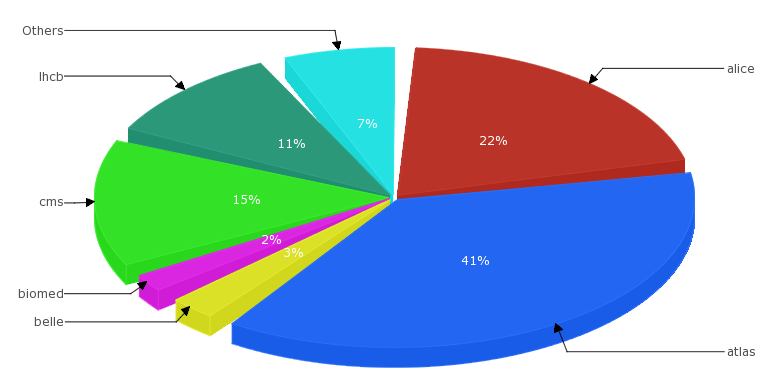
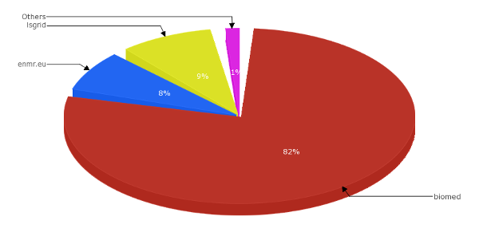

Welcome to the Life-Science Grid Community
The Life-Science Grid Community (LSGC) is a virtual research community to support life-science applications on the European Grid Infrastructure (EGI).
News
- July 2015: Virtual Imaging Platform (VIP) mentioned in iSGTW.
- July 2015: With 81 million CPU hours consumed during the
last year, biomed is the most active non-physics VO in
EGI, according
to EGI's
accounting.
Pie Chart showing the share in
Normalised CPU time (kSI2K) per VO (June 2014-June 2015).

- April 2015: Virtual Imaging Platform (VIP) inspires EGI. Also see a typical use-case on multiple sclerosis..
- December 2013: VAPOR beta version released.
- December 2013: MosGrid VO joins LSGC.
- November 2013: according to EGI's accounting statistics,
LSGC VOs have been the most active ones in Life-Sciences
in terms of number of executed jobs and consumed CPU
during the last year. This graph shows the per-VO
distribution of the normalized CPU time consumed by
Life-Science VOs in EGI from December 2012 to November
2013 (total: 230,367,332 normalized CPU hours):

- May 2013: Johan Montagnat is elected as LSGC coordinator for the next year.
- April 2013: DECIDE joins LSGC.